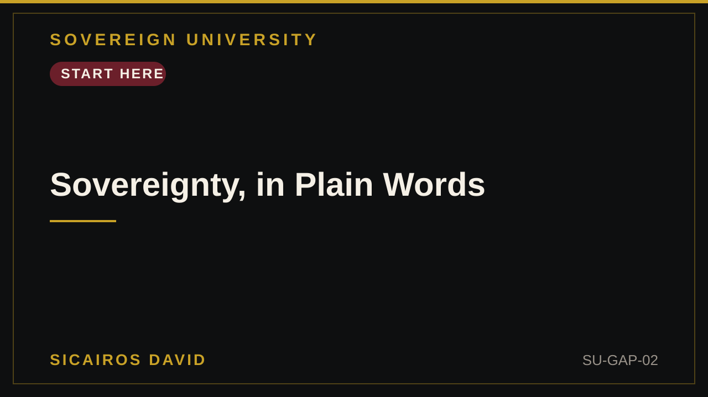
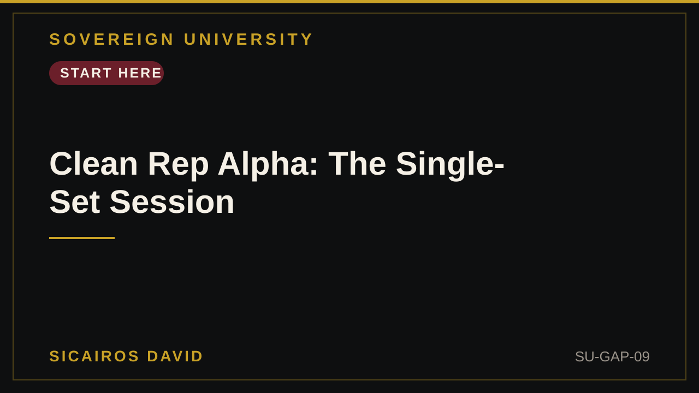
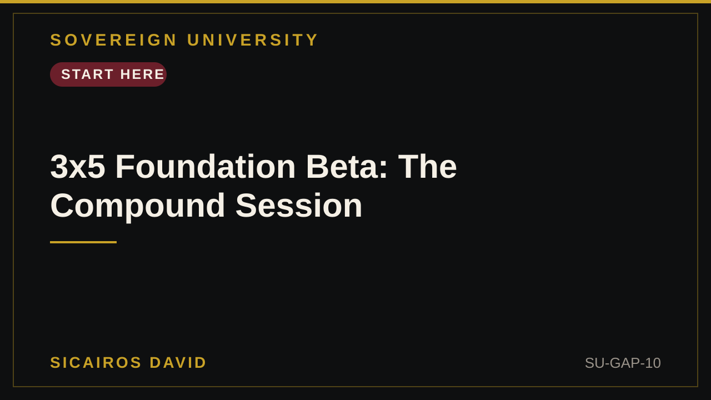

SOVEREIGN UNIVERSITY
Start here. Watch one thing. Make something useful.
Ten short orientation videos, then choose a direction: a launch pathway, a practice lesson, a wellness lesson, or a worksheet. These are self-guided resources, not accredited courses or a credential.
Browse the full catalog — all 78 videos University orientation New: the fresh series
Start here — the orientation videos

Sovereignty, in Plain Words

Systems Thinking Without the Jargon

The Receipt Rule

Align Meets Build

What Sovereign University Is Not

Your Dashboard and Workstation, Explained

The Routines Ladder, Explained

Clean Rep Alpha: The Single-Set Session

3x5 Foundation Beta: The Compound Session
Choose a direction
Six launch pathways · Practice lessons · Wellness lessons · Workout Portal · Printable worksheets · Three course kits